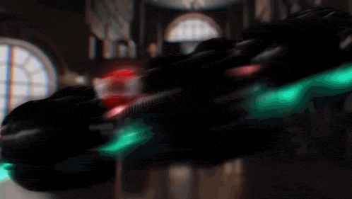

Kamen Rider Zeztz follows the story of Baku Yorozu,
a self-proclaimed ordinary young man living what he considers a dull, uneventful life.
But each night, when he falls asleep, he enters the dream world as the
Invincible Agent, Code Number 7. Thanks to his ability to lucid dream,
Baku can shape and control his surroundings within this realm.
However, the dream world is plagued by entities known as Nightmares monsters born from fear and darkness.
Their goal is to break free from the dreamscape and manifest in reality.
To protect both worlds, Baku wields the Zeztz Driver, transforming into Kamen Rider Zeztz
and battling the Nightmares before they can awaken into the real world.
Series catchphrase is "his dream is a mission to save the world."

This site is devoted to celebrating Kamen Rider Zeztz, the acclaimed series produced by Toei.